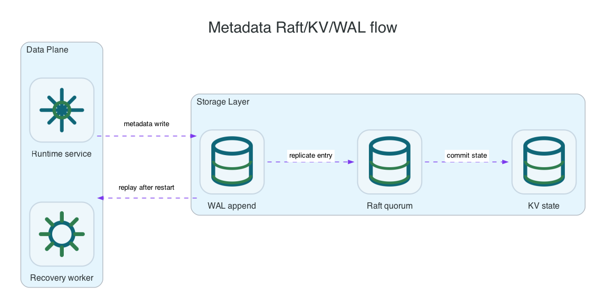

Reference / Runtime
Metadata durability with Raft, KV, and WAL.
Li9 S3 metadata is stored in a PVC-backed Raft/KV/WAL service. Object data is not considered safely committed until protected data writes and metadata commit rules both succeed.
What Metadata Stores

| Data | Examples | Durability Requirement |
|---|---|---|
| Bucket state | Bucket names, regions, owner state, versioning state, Object Lock settings. | Committed through metadata quorum. |
| Object index | Keys, versions, delete markers, checksums, storage class, encryption metadata. | Committed after object payload protection succeeds. |
| Policy and lifecycle config | Bucket policies, lifecycle rules, replication rules, inventory and table configs. | Committed through metadata quorum and consumed by runtime services. |
| Async work state | Healing, replication, inventory, restore, and cleanup checkpoints. | Recoverable after service restart. |
Placement Options
| Mode | When To Use | Tradeoff |
|---|---|---|
| Dedicated metadata PVC | Shared data backends, production clusters, or environments with low-latency metadata disks. | Clear isolation and easier sizing, more PVCs. |
| Colocated with data PVC | Per-node RWO data layout where storage and metadata must land on the same nodes. | Fewer pods/PVCs, tighter coupling to storage-node lifecycle. |
| Host path in native packages | Linux or Windows installs where local disks are mounted directly. | Host operations must protect config, data, metadata, and WAL paths together. |
OpenShift Checks
# Dedicated metadata PVCs
oc -n li9-s3-runtime get statefulset metadata-service
oc -n li9-s3-runtime get pvc -l app.kubernetes.io/name=metadata-service
# Colocated metadata with data pods
oc -n li9-s3-runtime get statefulset storage-node
oc -n li9-s3-runtime get pods -l app.kubernetes.io/name=storage-node -o wide
oc -n li9-s3-runtime get s3storage li9-s3 -o jsonpath='{.status.conditions}' | python3 -m json.toolHealth Signals
- Metadata leader is elected and stable.
- Quorum is available before accepting writes.
- WAL fsync latency is within the target budget.
- Snapshot and compaction age are bounded.
- Object metadata updates do not appear without durable protected payload writes.
Unsafe States
If metadata quorum is lost, Li9 S3 should report storage unavailable instead of accepting writes or returning fabricated missing-object results. Split-brain handling is intentionally fail-closed.